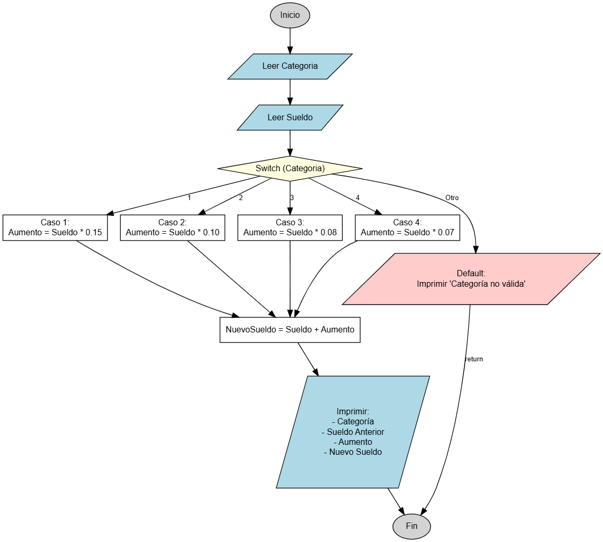

Aumento Salarial por Categoría
Calculando el nuevo sueldo de un trabajador
Hasta ahora tus programas seguían un solo camino (secuenciales). En este problema aprenderás a usar la estructura de control selectiva switch (interruptor). Esta estructura es ideal cuando tenemos un menú de opciones fijas, como en este caso, donde el aumento de sueldo depende exclusivamente de la categoría del empleado.

Objetivo
Crear un programa que ayude a calcular el aumento de sueldo de un trabajador. El programa debe solicitar la categoría del empleado (un número entero del 1 al 4) y su sueldo actual, para luego determinar cuánto aumentará su salario basándose en una tabla de porcentajes predefinida.
Variables a Declarar
- Categoria: tipo entero (
int) - El nivel del trabajador (1, 2, 3 o 4). - Sueldo: tipo real (
double) - Cuánto gana actualmente. - Aumento: tipo real (
double) - El monto extra que recibirá. - NuevoSueldo: tipo real (
double) - La suma del sueldo actual más el aumento.
Tabla de Aumentos
El porcentaje de aumento se decide según la siguiente tabla:
- Categoría 1: 15% de aumento.
- Categoría 2: 10% de aumento.
- Categoría 3: 8% de aumento.
- Categoría 4: 7% de aumento.
Operaciones a Realizar
- Leer la Categoría del trabajador.
- Leer el Sueldo actual.
- Usar una estructura
switchbasada en la Categoría:- Si es 1, multiplicar sueldo por 0.15.
- Si es 2, multiplicar sueldo por 0.10.
- Si es 3, multiplicar sueldo por 0.08.
- Si es 4, multiplicar sueldo por 0.07.
- Sumar el Aumento al Sueldo original para obtener el NuevoSueldo.
- Mostrar los resultados en pantalla.
Resultado Esperado
Ingrese la categoría del trabajador (1-4): 1 Ingrese el sueldo del trabajador: 1000.00 --- RESULTADO --- Categoría del trabajador: 1 Sueldo anterior: $1000.0 Aumento: $150.0 Nuevo sueldo: $1150.0